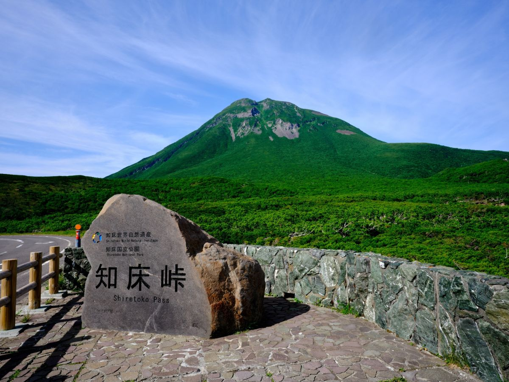
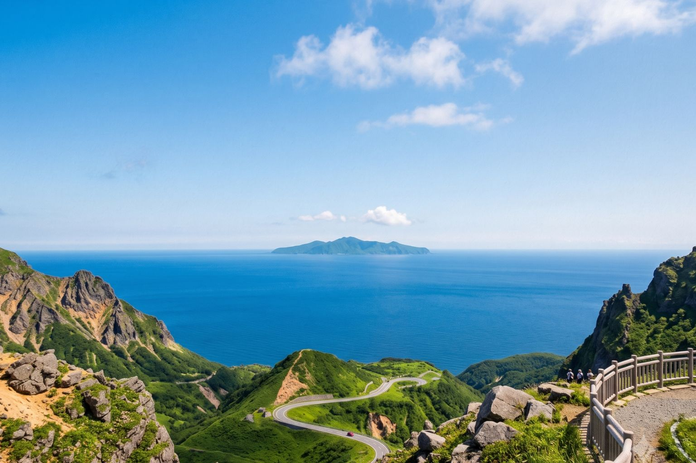
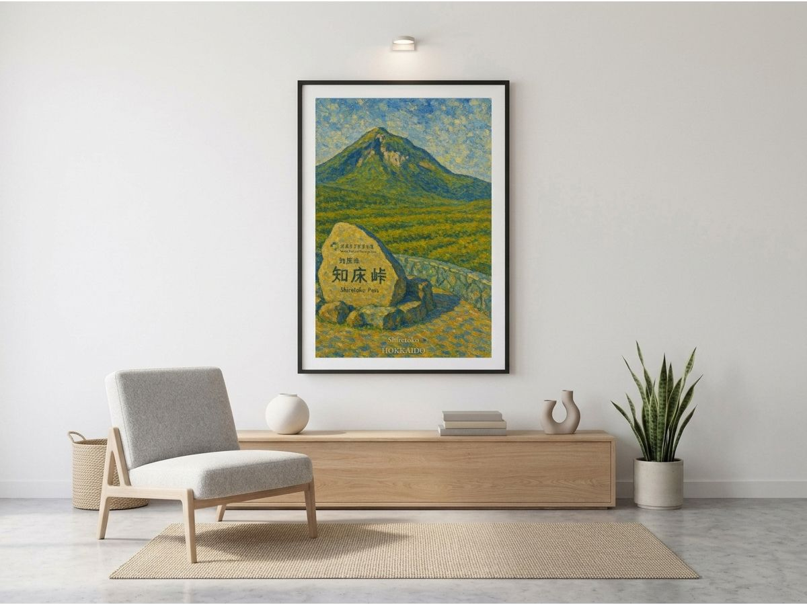

I was just about to brew some warm tea. I noticed you gazing at that piece on the wall for a while now, so I found myself a little curious.
Try to picture it. You're standing at a mountain pass wrapped in silence, somewhere near the northernmost tip of Japan. The air is cold enough to sting, yet it carries a faint scent of conifer needles.
On a breathlessly clear day, this pass offers you two overwhelming sights at once. One is a mountain — rugged, yet beautiful — towering right before your eyes. The other is an island, resting quietly on the distant horizon.
At the Edge of the World
This place is called Shiretoko Pass. It sits within a UNESCO World Heritage site in Hokkaido, at an elevation of 738 meters.
Stand here, and the first thing to capture you is the overwhelming presence of Mount Rausu. Its powerful ridgeline stretches toward the sky, dominating the land like a king. Cast your eyes downward, and the Nemuro Strait spreads out before you, seemingly without end.
To call this place merely a "beautiful scenic spot" would hardly do it justice. It is too full — and, at the same time, a little lonely.

Summer-Mount Rausu, standing as if it could pierce the sky.
An Island You Can't Reach
On days blessed with clear weather, the second protagonist of this view reveals itself distinctly across the blue water: Kunashir Island.
That island feels remarkably close. First-time visitors almost always ask, innocently, "How do you get there?" And the answer is always the same — you can see it, but you cannot go.
The situation surrounding this region changed in the wake of the Second World War. To this day, Japan and Russia hold differing positions on the matter, and a quiet, unresolved boundary remains between them. Ordinary travelers aren't free to simply charter a boat and cross over to those shores.
...I don't intend to talk politics, mind you. I'm only a cat — the meaning behind the lines humans draw is beyond me. I'm simply curious about the quiet stillness a traveler feels, standing in front of one.

Winter-Silhouette of Kunashir Island, lying quietly across the sea.
Beauty Becomes Eternal, Precisely Because It's Out of Reach
Most beautiful views are content simply to show you the beauty that's there. But what Shiretoko Pass offers is a little different. A place so visible, and yet forever untouchable. That single fact turns a mere view into a story.
Because we can't go there, we imagine. What kind of wind blows across it? What kind of creatures live there? Looking out at this scene, things we normally forget to think about — travel, history, the passage of time, the peace we currently hold — settle gently into the heart.
And the Shiretoko landscape never sits still. In spring, Mount Rausu stands tall, still dusted with the last of winter's snow. In summer, a deep, endless green covers everything. Come autumn, the mountains turn red and gold, and at dusk the whole world seems to melt into gold. And then there's the clear blue of a morning sky, the sea lying still beneath it.
The same place, and yet it never wears the same expression twice. ...Well. Maybe that fickleness is a little like me.

Available now as an art poster — a piece that blends seamlessly with your interior.
Not Just a Record, but a Feeling You Can Hang on a Wall
A photograph records a moment. But art, I think, holds onto the feeling you had in that moment.
Hanging this view on your wall isn't simply about hanging a pretty mountain painting. It means that on a busy day, when your eyes happen to land on it, you'll remember the presence of that towering mountain, and the story of that strange, quiet island lying beyond the sea — visible, and yet impossible to reach.
Hang it in your room, and maybe the pace of your life will shift, just slightly, into something more comfortable.
...Well. If you're someone drawn to stories with a touch of shadow in them, I think this poster will stay with you.
There are places you remember because you've been there. And there are places that stay with you forever, precisely because you never could.
Shiretoko Pass is exactly that kind of place.
...The tea's ready now. Let's let it cool a little first, shall we? There's no need to rush anything.